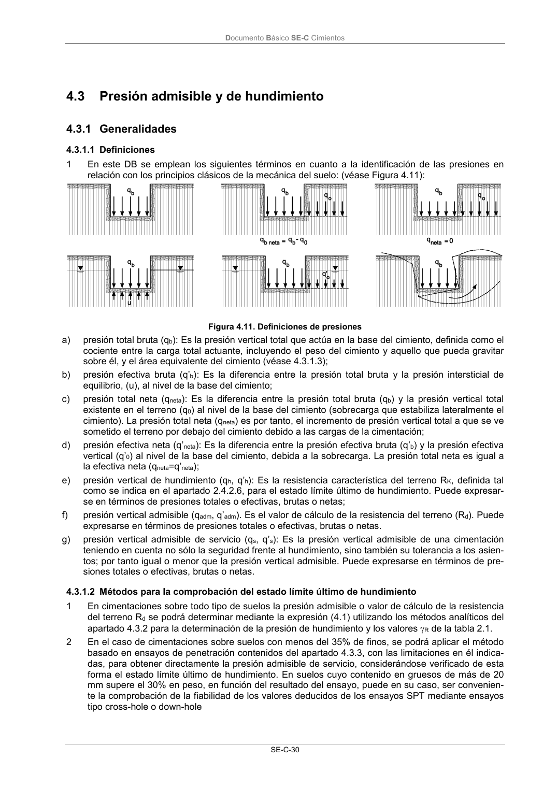

DB-SE-C · 4.2.3.2 Estados límite de servicio · versión 2019-12-20 · capa oficial
Formatos: JSON compacto · Markdown · PDF fuente
Ámbito del documento · texto del ámbito · documento y tablas
ID técnico a0068 · PDF pág. 34-35 · jerarquía no validada por persona · contrastado con el literal de la página 34 (candidato tipográfico); no validado por persona · padre: raíz
4.2.3.2 Estados límite de servicio 1 Para la verificación de los estados límite de servicio será necesario contar con parámetros repre- sentativos de la deformabilidad del terreno. Normalmente dependerán del tipo de terreno en estudio y del método seleccionado para la estimación de asientos (véase apartado 4.4). 2 En la estimación de asientos diferenciales, dependiendo del tipo estructural se debe prestar espe- cial atención a las consideraciones incluidas en el apartado 4.2.1.2. 3 En el caso en que el tipo de terreno haga prever asientos diferidos a largo plazo será necesario llevar a cabo un estudio específico sobre la magnitud de los asientos y el tiempo que tardarán en producirse. 4 En situaciones de poco riesgo en las que exista experiencia local abundante, la comprobación de los estados límite de servicio puede no requerir más información del terreno, aparte de las compro- baciones de los perfiles geotécnicos, que las condiciones hidrogeológicas y las propiedades índice básicas, necesarias para asegurar la similitud del caso considerado y los casos sobre los que se tiene experiencia. En cualquier caso, cuando se utilice este procedimiento para avalar la seguridad de la cimentación en estudio, debe dejarse constancia explícita de los parámetros geotécnicos, soli- citaciones sobre la cimentación y tipos de cimiento. Documento Básico SE-C Cimientos SE-C-30 4.3

PDF fuente redistribuible: copia fiel enlazada en esta página (SHA256 verificado).